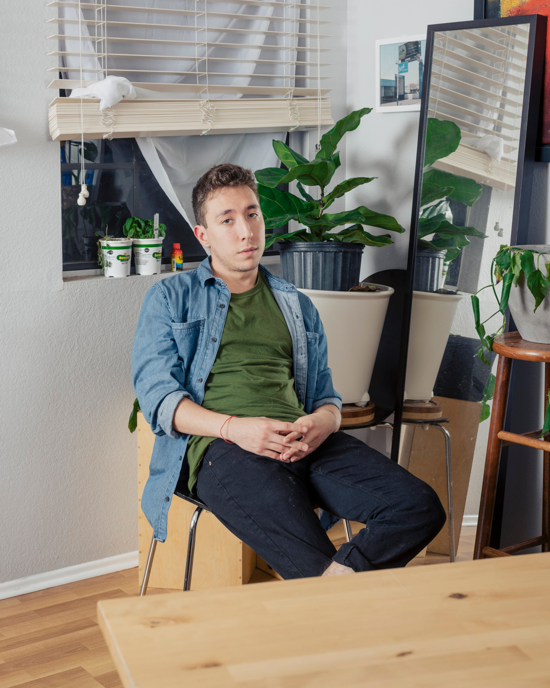

About Me
Arturo "Artie" Bradic was born in Mexico City in 1995 and immigrated to the U.S. at the age of 5. He grew up in Northwest Arkansas and eventually moved to Tucson, AZ to pursue a Neuroscience and Cognitive Science degree at the University of Arizona. After graduating and working in medicine for 2 years, he realized pursuing medical school was not the right path for him and switched careers to another interest that fullfilled his need for creativity and creation: technology and development. Naïve or ambitious? We'll find out soon...